パーフェクトクリア
概要
パーフェクトクリアとはフィールド内のブロックをすべて消去することです．パフェ，PCなどともいいます
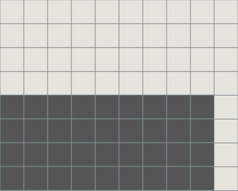 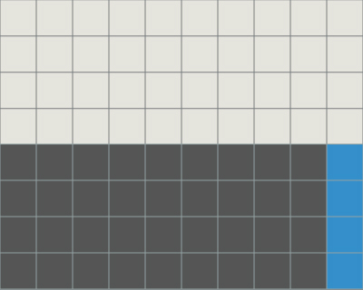 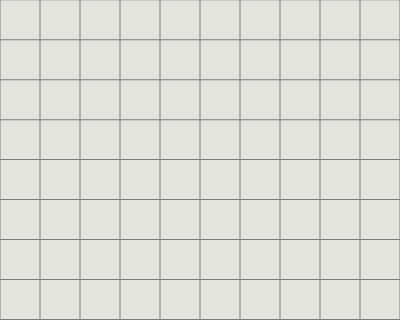
ミノはすべて4ブロックからなり，1ラインは10ブロックからなります．
したがってフィールドにあるブロックが奇数個の場合は，パーフェクトクリアは不能です．
例えば相手からの攻撃によって1ブロック欠けたラインが1ライン送られてきた場合，
偶数＋奇数＝奇数，奇数＋奇数＝偶数になることを考えると，
相手から偶数ライン送られなければ，ブロックが偶数個にならないことがわかります．
開幕
1ミノ4ブロック，1ライン10ブロックからなることと，7ミノ1セットの出現法則を利用して開幕に4ライン揃えてパーフェクトクリアを行う方法があります．
手順としては，最初の6～7ミノを利用して受けやすい地形を作り，4～3ミノでライン消去を行います．
パーフェクトクリア
最も一般的な形で，パーフェクトクリアも狙いやすいです．3つとも同じことをやっています．Iを回転入れして寝かせることも可能です．ネクストによって対応しましょう．
また，端を空けて積むと妥協として平積みなどにも移行しやすいです．
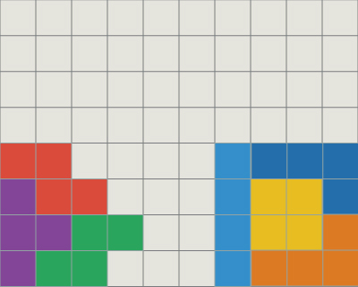 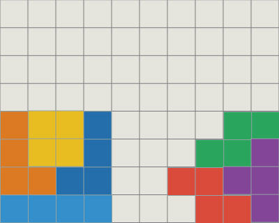 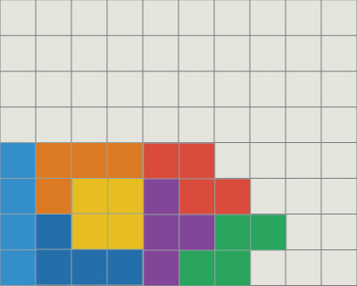
グレースシステム
Tを使わない形．地形を180度回転させても同じです．
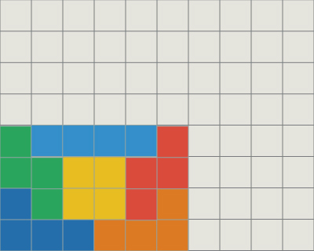
ぴろしきパフェ
テトリスパフェを狙える形です．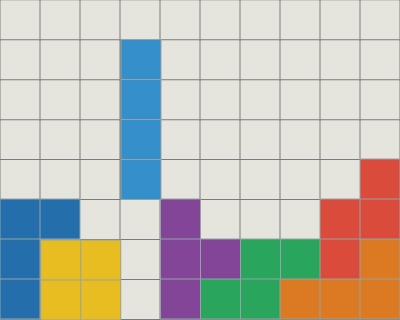 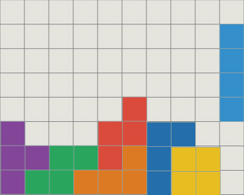
ねこじゃらし
TSMが多く狙える形です．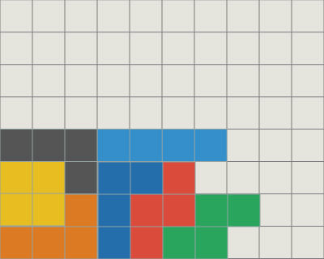
ストーンヘンジ
左右対称形でライン消去のイメージがわかりやすいです．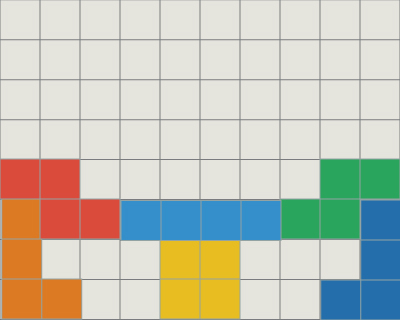
名称不明
地形を作るときミノ順に多く左右されます．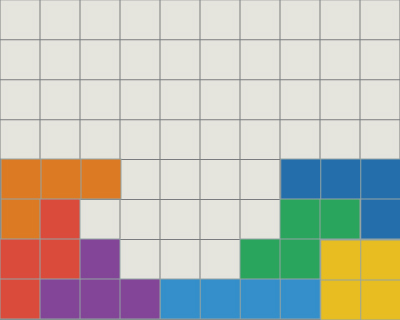